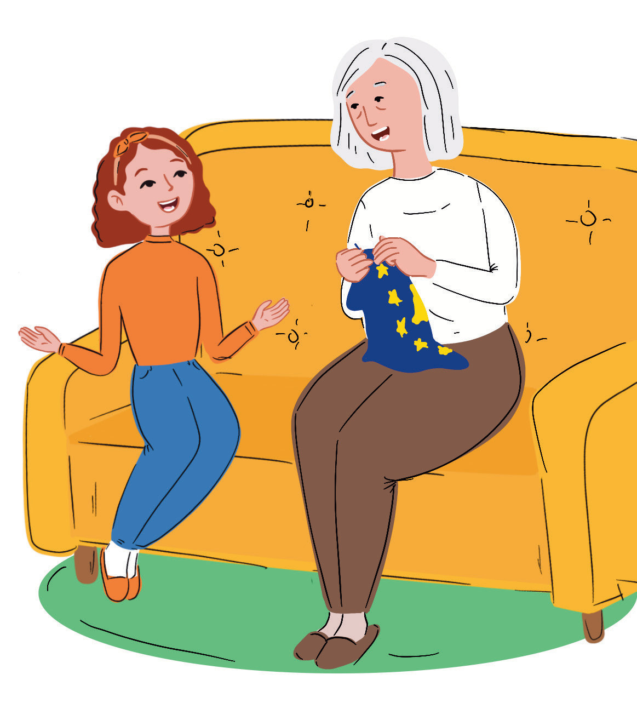

Vendi ku jetoj
Komunitetet dhe veçoritë e tyre
Situata 1.
Gjyshja e Kleas ka shumë dëshirë të qëndisë. Ajo i ka qëndisur Kleas shumë fustane e triko dhe të gjitha shoqeve u pëlqejnë. Në veshjet e Kleas duket se po çelin lulet shumëngyrëshe. Një ditë gjyshja vendosi të qëndiste flamurin e Kosovës. Punonte gjithë ditën se kishte dëshirë ta kishte gati për 17 Shkurtin - festën e Pavarësisë së Kosovës.
- Ke duar të arta, moj gjyshe! Më dukesh si Marigona e Flamurit, - i tha Klea. - Nuk kam parë flamur më të bukur!
Gjyshja po prekte me radhë yjet në flamur dhe po tregonte diçka nga tradita e secilit popull që jeton në vendin tonë.
- Secili popull që jeton në vendin tonë ka zakonet e tij, kulturën e tij, që e karakterizon atë. Është e rëndësishme që të gjithë popujt t'i respektojnë kulturat e njëri-tjetrit dhe të jetojnë në harmoni.
- Ti je si një libër historie, moj gjyshja ime e dashur, - tha Klea dhe e përqafoi me shumë dashuri.
